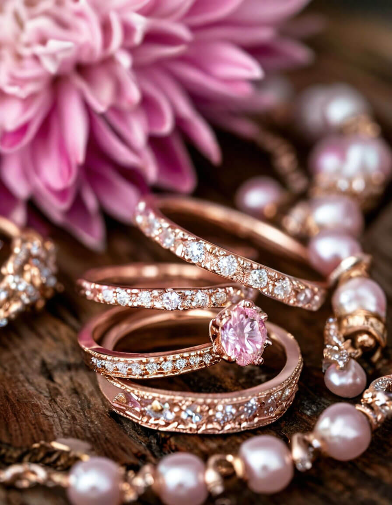
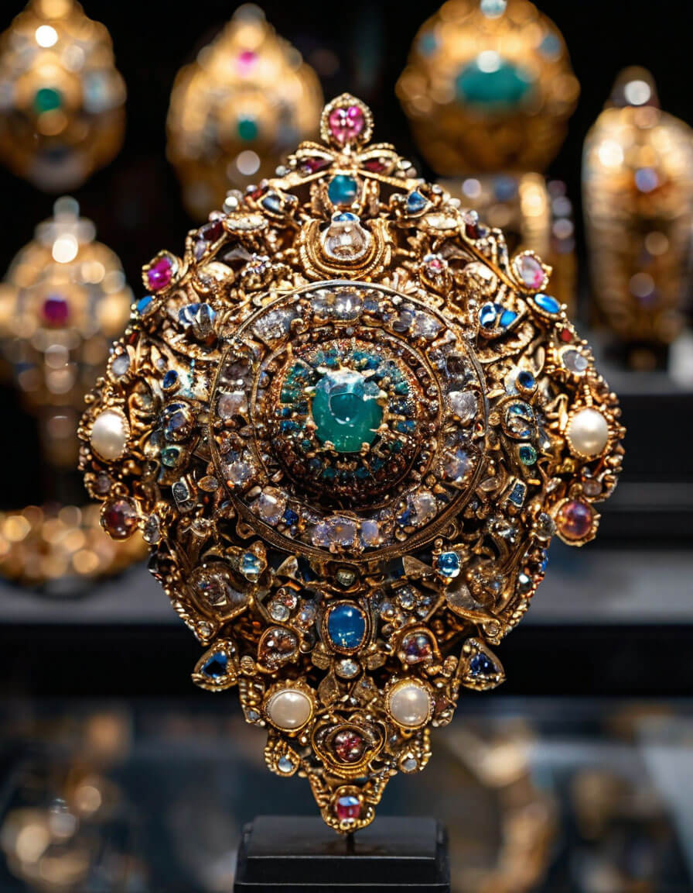
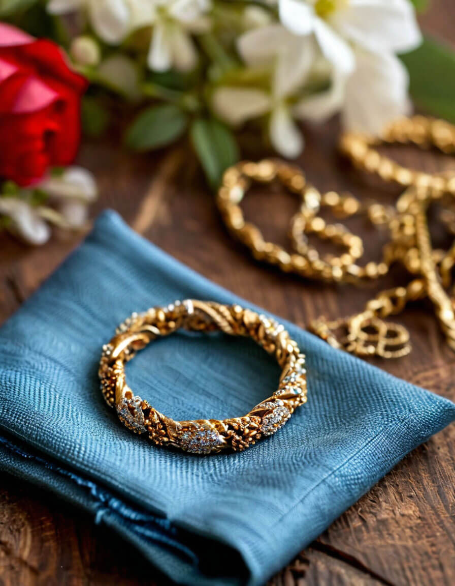
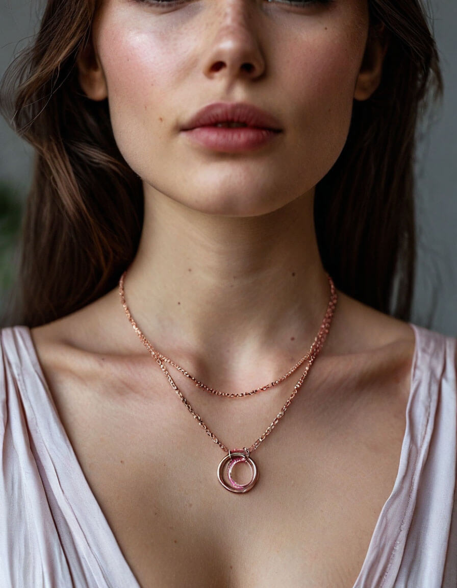

5 Tips for Choosing the Perfect Engagement Ring
Choosing an engagement ring is one of the most significant decisions you will make in your life. It symbolizes your love and commitment, and it’s a piece of jewelry that your partner will wear every day. With so many options available, it can be overwhelming to find the perfect ring. Here are five essential tips to help you navigate the process and choose a ring that your partner will cherish forever.
Know Your Budget
Before you start shopping, it’s crucial to establish a budget. Engagement rings come in a wide range of prices, and knowing how much you can afford will help narrow down your options. While traditional advice suggests spending two to three months' salary, the most important factor is what you feel comfortable spending. Remember, it’s the thought and love behind the ring that truly matters, not the price tag.
Understand the 4 Cs
When it comes to diamonds, the 4 Cs—Cut, Color, Clarity, and Carat weight—are essential factors to consider:
-
Cut: This refers to how well the diamond has been shaped and faceted. A well-cut diamond will reflect light beautifully and appear more brilliant.
-
Color: Diamonds come in a range of colors, from colorless to light yellow or brown. The less color a diamond has, the higher its value.
-
Clarity: This measures the presence of internal or external flaws (inclusions and blemishes). A higher clarity grade means fewer imperfections.
-
Carat Weight: This indicates the size of the diamond. Larger diamonds are rarer and typically more expensive.
Choose the Right Metal
Consider the metal type (gold, platinum, etc.) that best suits your partner's style.
-
White Gold: A popular choice for its modern look and durability. It’s often plated with rhodium for added shine.
-
Yellow Gold: A classic choice that adds warmth and richness to the ring. It’s a timeless option that never goes out of style.
-
Rose Gold: Known for its romantic hue, rose gold has gained popularity in recent years. It complements a variety of skin tones and adds a vintage touch.
-
Platinum: The most durable and hypoallergenic option, platinum is a premium choice that offers a luxurious feel.
Consider Their Style
When choosing an engagement ring, it’s essential to consider your partner’s personal style. Pay attention to the jewelry they currently wear. Do they prefer classic, vintage, or modern designs? Are they drawn to intricate details or minimalist styles?
If you’re unsure, you can discreetly ask their friends or family for advice. Alternatively, you could take them ring shopping under the guise of looking for something else, allowing you to gauge their preferences without revealing your intentions.
Get the Right Size
Ensuring that the ring fits perfectly is crucial. If you’re unsure of your partner’s ring size, there are a few ways to find out:
-
Borrow a Ring: If your partner wears rings on the same finger, you can borrow one and have it measured at a jeweler.
-
Ask Their Friends or Family: They may have insights into your partner’s size.
-
Use a Ring Sizer: Many jewelers offer free ring sizers that you can use at home.


The History of Jewelry: From Ancient Times to Modern Trends
Jewelry has been a significant part of human culture for thousands of years, serving as adornment, status symbol, and personal expression. Its history reflects the values and artistry of various civilizations.
-
Ancient Times - The earliest jewelry dates back to prehistoric times, with adornments made from shells, bones, and stones. In ancient Egypt, jewelry was crafted from gold and precious stones, believed to have protective properties. Symbols like the ankh represented life and rebirth.
-
Classical Era - In ancient Greece, jewelry became a form of personal expression, with designs inspired by nature and mythology. The Romans advanced jewelry making by introducing glass and enamel, creating colorful pieces that showcased wealth and power.
-
Middle Ages - During the Middle Ages, jewelry took on religious significance, with gemstones symbolizing spiritual beliefs. Elaborate designs featured crosses and other religious motifs, while pearls became a symbol of purity.
-
Modern Era - The 19th and 20th centuries saw mass production make jewelry more accessible. Art movements like Art Nouveau and Art Deco influenced bold styles. Today, consumers seek unique, personalized pieces, reflecting contemporary trends and individual expression.
How to Care for Your Jewelry: Tips for Longevity
Proper care can extend the life of your jewelry. Here are some essential tips to keep your pieces looking new:
-
Store Properly:
Keep your jewelry in a soft pouch or a separate compartment to avoid scratches.
-
Clean Regularly:
Use a gentle cleaner and a soft cloth to clean your jewelry regularly.
Avoid Harsh Chemicals:
Keep your jewelry away from perfumes, lotions, and cleaning products.
Remove Before Activities:
Take off your jewelry before exercising, swimming, or doing household chores.


How to Style Jewelry for Any Occasion
Jewelry is a powerful accessory that can elevate any outfit and express your personal style. Whether you're dressing up for a formal event or keeping it casual for a day out, the right jewelry can make all the difference. Here are some tips on how to style jewelry for various occasions.
-
Casual Outings
For everyday wear, opt for simple and understated pieces. Delicate necklaces, stud earrings, and thin bracelets can add a touch of elegance without overwhelming your look. Layering a few dainty necklaces can create a trendy, bohemian vibe. Remember, comfort is key, so choose lightweight pieces that you can wear all day.
-
Work or Business Events
When dressing for the office or a business meeting, choose classic and professional jewelry. A pair of pearl or stud earrings, a sleek watch, and a simple pendant necklace can enhance your outfit without being distracting. Stick to neutral colors and minimal designs to maintain a polished appearance.
-
Formal Events
For weddings, galas, or other formal occasions, don’t be afraid to make a statement. Opt for bold pieces like chandelier earrings or a statement necklace that complements your outfit. If your dress is simple, you can go for more elaborate jewelry, while intricate dresses may call for more understated accessories. Remember to balance your jewelry with your outfit to avoid clashing.
-
Date Night
When it comes to date night, choose jewelry that reflects your personality and makes you feel confident. A beautiful pair of drop earrings or a striking cuff bracelet can add a romantic touch to your look. Consider wearing a piece that has special meaning to you, as it can serve as a great conversation starter.
Jewelry for Men: Breaking Stereotypes and Embracing Style
In recent years, the perception of jewelry for men has evolved significantly. No longer confined to traditional pieces like watches or wedding bands, men’s jewelry has become a powerful form of self-expression and style. As societal norms shift, more men are embracing jewelry as a way to enhance their personal style and showcase their individuality.
Breaking Stereotypes
Historically, jewelry for men was often viewed as a sign of flamboyance or vanity. However, contemporary fashion has challenged these stereotypes, promoting the idea that jewelry is for everyone, regardless of gender. From celebrities to influencers, many men are now confidently wearing rings, bracelets, necklaces, and earrings, proving that jewelry can be both masculine and stylish.
Embracing Versatility
Men’s jewelry comes in a variety of styles, materials, and designs, making it easy to find pieces that suit any occasion. Whether it’s a sleek leather bracelet for a casual outing or a bold statement ring for a night out, there are countless options to choose from. Layering different pieces, such as stacking rings or combining bracelets, can create a unique look that reflects personal taste.
Confidence is Key
The most important aspect of wearing jewelry is confidence. Men should feel empowered to experiment with different styles and find what resonates with them. Whether it’s a subtle accessory or a standout piece, wearing jewelry can enhance a man’s overall look and make a powerful statement.